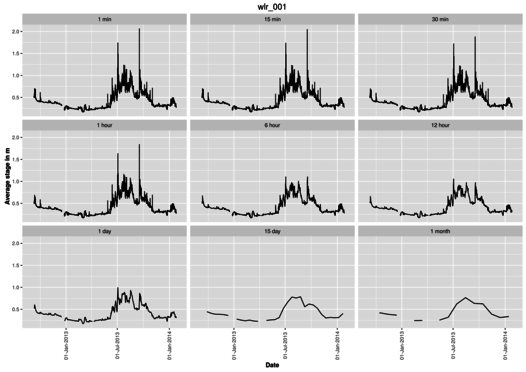
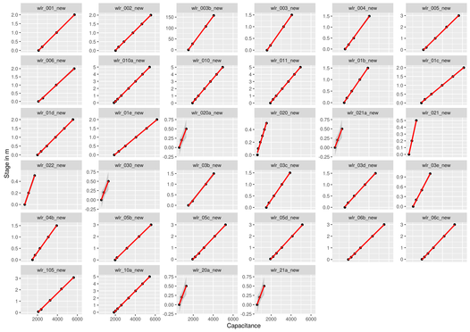

This document summarises the scripts used to process the logs from capacitance based water level recorders from Odyssey. The logs are slapped together, calibrated and then agregated to stages from 1 minute to one month. Outputs are in the form of CSV files and a figure for each logger showing the different aggregations in panels.

Sub-routines are organised as follows:
[site].R --> calib.R --> import.R --> null.R --> mergenull.R --> aggreg.R
Here [site] is to be replaced by "agn" for Aghnashini and "nlg" for Nilgiris - the two scripts are essentially the same and perform the following:
This script calibrates the capacitance probes using a csv file of the capacitance readings at different depths and a linear regression.
A sample of the calibration file is as below. The file essentially comprises of a header containing logger identification numbers followed by length of the cable under water in metres and the capacitance reading (in farad?) for that length.
Site Name |WLR001 ----------|------ Site Number |1 Logger |Capacitive Water Level Logger Serial Number |43682 | Length|Capacitance 0|2108.5 .20|2468 1.00|3917 2.00|5710.5
Once the calibration data is read for each unit, a linear regression is performed and the coefficient are dumped to a file while the plot of the data along with a regression line for intercept and slope is plotted in a panel for all the units.
